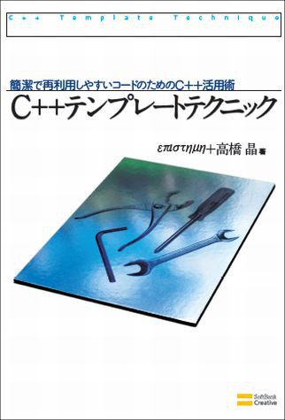
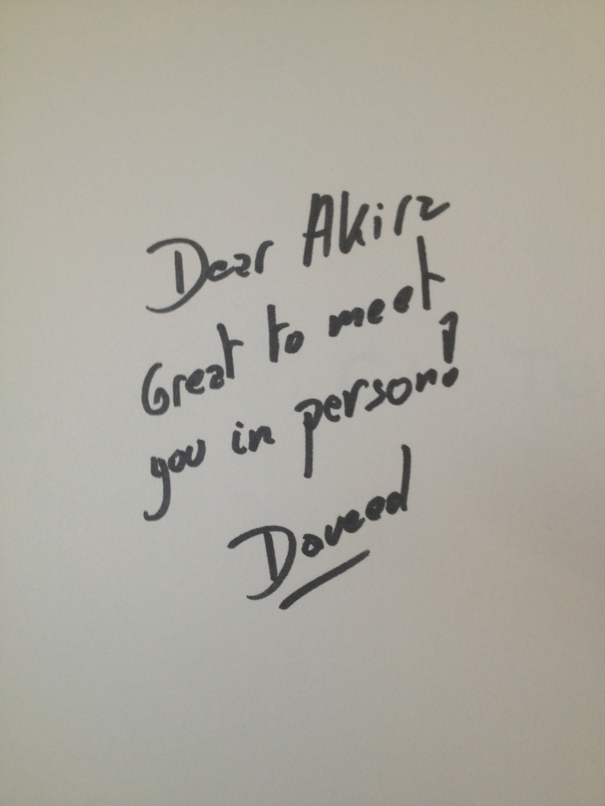
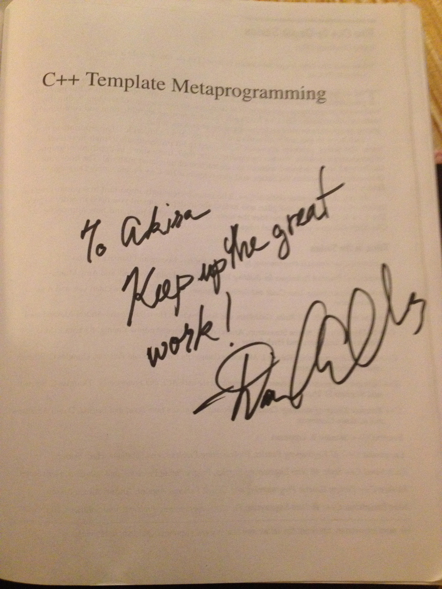

本書は、プログラミング言語C++の特徴的な機能である「テンプレート」を使用した、さまざまな技法を紹介しています。
C++のテンプレートは、パラメタライズド・タイプ(parameterized type)という、処理に使用する型をパラメータ化する機能です。この機能を使用することにより、型が違うだけで同じことをするプログラムコードを共通化でき、コードの再利用性を高めることができます。その共通化は、簡単なコードであればテンプレートを単に使用するだけで行えますが、「特定の型、または特定の条件に一致する型の場合は、違うことをしたい」のような要求が発生した場合には、いくつかの「技法」が必要になります。
本書で紹介するテンプレートに関する技法は、C++のユーザーコミュニティが長年かけて編み出してきたものたちです。C++は、「言語機能は極力増やさない。できるかぎりライブラリで実現せよ」という設計思想を持った言語です。そのため、ライブラリを作るユーザーが「技を編み出す」という場面が多くあります。本書はそういった、ひらめきの結晶、人類の叡智といったものを集めた書籍になっています。
本書を読むことで、テンプレートを使用した既存の技法を身につけるだけでなく、新たな技法を編み出し、C++やプログラミングをさらなる高みへと押し上げてくれる方が現れることを願っております。
第1章から第3章は、επιστημηさん、それ以降の第4章から第12章を私、というように担当を設定していました。著者の内部的には「基礎」と「発展」の二部構成にしてあります。
しかし実際には、επιστημηさんがお忙しい時期があったために、私も第2章と第3章をお手伝いしていました。
執筆期間は、私が参加したネタ出しと章立て、および執筆とレビューが完了したあとの校正も含めて、約1年間でした。
ペースとしては、1ヶ月に2章ずつ仕上げました。
私とエピさんが書き上がった時点から、レビュアーさんたちにレビューをしてもらい、そのレビューと直しに3ヶ月ほどかかりました。
本書の表紙には、スパナ、ドライバー、六角レンチなどが並んでいます。『Modern C++ Design』の表紙が10徳ナイフなので、それにあやかったものになっています。10徳ナイフは、「テンプレートというひとつの機能が、多くのことを表現できる」とかそういったことを表現しているのでしょう。
本書の表紙デザインは編集側が考えたものですが、正直なところ、私は気に入っていません。私の印象では、本書が『Modern C++ Design』の劣化版であることを表現しているように感じます。
第2版の方は、私に表紙デザインのコンセプトを決めさせてもらえたので、非常に気に入っています。そちらのデザインについては、第2版のページで解説します。
ある日、私のもとに、επιστημη(えぴすてーめー)さんから一本のメールが来ました。
エピ：「いま、テンプレートの本を書こうとしてるんだけど、なんかネタない？」
私： 「思いつく限りのネタを列挙してみました。(テンプレートメタプログラミング、SFINAE、テンプレート型変換演算子、ポリシーに基づく設計など)」
エピ： 「じゃあ、書いて♪」
こういった経緯から、書籍の執筆に関われるチャンスだと思い、執筆に参加させていただくことになりました。
エピさんとは、わんくま同盟の東京勉強会で知り合いました。このとき声を掛けていただいたのは、私がわんくま同盟の勉強会で、C++0xコンセプトの発表をしたからだったと思います。
当時、知っていながら書かなかったものが、いくつかあります。
まず、型リスト。『Modern C++ Design』でも大きく取り上げられ、実際に有用な技法でした。しかし、C++03でBoost.MPLのような優れた型リストを実装するのは困難がともなうのと、当時C++0xに可変引数テンプレートが導入予定だということがわかっていたこともあり、本書初版では紹介しませんでした。
型リストは、第2版でC++11に対応する際、改めて紹介を書きました。
もうひとつは、「他言語でのテンプレート相当の機能紹介」です。これはたとえば、JavaやC#のジェネリクス、Haskellの多相型・型クラス、Ruby界隈で使われる用語「ダック・タイピング」などです。これらは、本書の技法が他言語でも役立つこと、またその逆に、他言語ユーザーでも本書の技法が良い学びになること、いろいろな言語の似て非なる機能を学ぶことで知見を広めてもらいたい、などを目的としたかったのです。しかしこれは断念しました。その理由としては、私の中途半端な知識で、他言語について書きたくなかったからです。しっかりしたものを書くには、それなりの調査期間が必要となりますが、その期間を確保するのが難しかったため、書かないことにしました。
当時の私は、ブログで公開文章を書いてはいましたが、それほどうまく日本語を扱えていたわけではありませんでした。雑誌のような企業が管理する媒体での記事執筆もしていませんでした。私がブログで書く文章は「ひとつの記事が、1〜2分程度で簡潔に読めるように」を心がけていたこともあって、あまり詳細な説明も書いてきませんでした。
そのため、書籍というターゲット環境向けに文章を書くのに、少し戸惑いました。編集さんにもそう説明した上で、試しにひとつの章を書いて、それを編集さんに見てもらうことにしました。それを見てもらって編集さんに言われたのが「説明は、書きすぎるということはないから、もっと書いてほしい」ということでした。これはその後に文章を書くときにも、よく思い出す言葉です。
本書初版は、私のこれまでの癖もあって、簡潔な説明が多く残っています。それに対して「説明がさらっとしていて読みやすい」という好意的な感想も多くいただきました。しかしやはり、とくに書籍という媒体では、しっかりとした説明が必要だと考えてその後文章を書いてきたので、今ではもう、あのときのような簡潔な文章は無意識には書けなくなっています。
本書の執筆において、ひと通りの内容を書ききった段階から、何人かのC++エキスパートにレビューをしていただくことにしました。レビュアー集めは、私とエピさんが声をかけました。そのときに集まったメンバー主に、わんくま同盟コミュニティのつながりでした。それに加えて、C++標準化委員会で知り合ったuskzさんと近藤さんにも参加していただけました。編集さんにもお願いすればレビュアーを探してきてもらえるのですが、私たち著者のつながりでレビュアー集めをしました。信頼できる方々とのつながりがあったのは幸いでした。
レビューには、プログラマにはおなじみのバグ管理システムTracを使用しました。これは、近藤さんがシステムを用意してくれました。
書籍という媒体で文章を書いたことがないのは、やはり大きかったです。めるぽんと近藤さんから、「動機が弱い」という問題が報告されるたびに、頭を抱えていたのを覚えています。そのたびに、紹介している技法を調べ直し、動機やユースケースを収集し、文章をまとめ直したりしていました。彼らが発売前に指摘してくれなかったら、本書は「何に役立つのかわからない」「こんなのはただの遊びだ、実用的じゃない」というような評価が大半になっていたことでしょう。
第11章で書いた「Extension Member Function」というのは、C#の言語機能である「拡張メソッド(Extension Method)」をC++で実現しよう、というもので、私が名前を付けたものです。これは、PStade.OvenやBoost.Rangeが採用しているパイプ演算子(operator|())を、Rangeアダプタとして使用するだけでなく、メンバ関数を後付けする汎用的な技法にしよう、と思い立って書いた章になります。
この章のために、いくつかのRangeアダプタの実装を紹介用に書いて、それをもとに文章にまとめました。それに対してuskzさんから、「この実装では遅延評価が考慮されていない。PStade.OvenとBoost.Rangeは、イテレータによって処理を遅延させていて、Rangeアダプタがその場で処理を実行するわけではない」という指摘が行われました。私は、Rangeアダプタの技術を正しく理解しない状態で、執筆を進めていたのでした。uskzさんに多大な感謝をしつつ、Rangeアダプタの概念と実装を調べ直し、この章をまるまる書き直すことになりました。
あのときは自分の不甲斐なさにだいぶ落ち込んだものですが、これもまた、発売前のレビューが重要だと思えた出来事でした。
文章中に載せるコードは、自分でサンプルコードを書いて、Wordの原稿データに貼り付け、元のサンプルコードを破棄していました。そのようにしていたため、レビュー段階になって、複数コンパイラでの検証が難しくなりました。あのときは、あんどちんさんが原稿データからサンプルコードを手作業で抽出して、検証を進めてくれました。そのことがあってからは、使用したサンプルコードは、しっかりとっておくようにしました。
編集さんはプログラマというわけではないので、こちらが指定しないとわからないことがあります。
たとえば、可変引数を表すコード中の「...」(ドットx3)を、省略形だと判断して「…」(三点リーダー)に置き換えてしまったりします。「ドットx3は、プログラムとして意味のあるものですので、置き換えないでください」のように、指示してあげる必要があります。
文章中のコードも、編集さんの判断で等幅フォントにしてくれたりはしませんので、等幅フォントにしたいところは、全て指示してあげる必要があります。
書籍1冊の分量は、目安として最低で300ページ。編集さんからは「それより少ないと値段がつけられない」と言われていました。
本の大きさはB5版だと事前にわかっていたので、それに合わせて、1日に何ページくらい書けるのかを測定しました。そのときは、休日に丸1日かけて11ページが限界でした。そして、1日に限界まで作業すると、あとが続かないこともわかりました。
書籍は情熱をもって「えいやっ」という感じで一気に書き上げることはできません。これには、私は本業が別にあり、副業としてプライベートの時間や仕事の合間に作業をしているので、書籍に全力で取り組むことができないという理由も含まれます。しかし、情熱は短期間しかもたない、というのがより大きな理由です。たとえフルタイムで書籍の執筆に携われたとしても、数日程度なら続いたとしても、数十日は情熱が維持できません。
クリエイティブな仕事をしている人はおそらく皆そうなのだと思いますが、私は飽きっぽい性格も相まって、やりたいことが毎日のように溢れてきます。そうすると、ひとつのことに情熱を注いでいるとそのうちに「ほかにもやりたいことがあるのに…」とイライラしてきてしまいます。そこでほかのことを一度はじめてしまうと、元々やっていた作業の優先度がどんどん下がっていってしまいます。そうなると最悪の場合、書籍の執筆が中断、もしくは断念ということになりかねません。
期間が長い副業を続けるには、情熱を抑えて習慣化する必要があります。1日の作業量を減らし、毎日無理なく進められるくらいにするのがいいでしょう。(関連記事：「情熱はときに邪魔になる - 信念と勇気、その先へ」)
Tracに投稿されたレビューの件数は、400件ちょっとでした。1ページに1つ以上は指摘があった計算になります。
書籍は一度発売してしまうと修正がきかない媒体です。これは、バグに関する要求が非常に厳しいソフトウェアを書いているようなものです。読者からはバグが0件の製品のみが求められている、と考えて取り組みました。
レビューが投稿されると、うんざりすることもありますが、それを直すたびに安心感が増します。
私にとって初の書籍執筆だったこともあり、執筆のツールとして、よく考えずにMicrosoft Wordを使っていました。
あとになって振り返ると、ツールの選択は失敗でした。Wordには校正機能がついているため、些細な日本語の間違いは指摘してくれます。しかし、プログラムコードが多く出てくる書籍ではやはり、リッチテキストエディタよりも、プレーンテキストエディタの方が何かと都合がいいです。プレーンテキストの方はたとえば、バージョン管理システムとの相性がいいので、レビューの管理もしやすくなります。
レビューのツールとしてTracを使用したのは、成功でした。
レビュアーが指摘し、著者とともに修正内容を検討し、編集さんがPDFに反映させ、確認がとれたらチケットを閉じる、という一連の流れがよどみなく動いていました。
私が近藤さんとC++Now! 2012に参加したとき、書籍『C++ Templates: The Complete Guide』の著者であるDaveed Vandevoordeさんがキーノートの発表者として来ていました。そのとき、私たちの『C++テンプレートテクニック』をDaveedさんにプレゼントしました。『C++ Templates』はすばらしい書籍でした。その著者の方とお会いでき、さらに自分が書いた本を受け取っていただけて、非常にうれしかったです。
私が持参した『C++ Templates』に、サインもいただけました。

また、そのときのC++Now!では、書籍『C++ Template Metaprogramming』の著者であるDave Abrahamsさんにもお会いできました。じつはそのときは、彼に用事があったからC++Now!に行ったのでした(『プログラミングの魔導書 Vol.2』で彼にインタビューをしたので、その関係です)。
Daveにも、私が持参した『C++ Template Metaprogramming』に、サインをいただけました。

C++テンプレートに関する偉大な名著を書かれたこのお二人に会えて、サインもいただけて、感謝感激です。